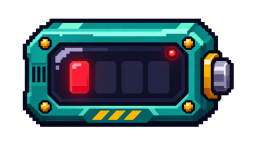

Suggerimento
- x
- Colonna del robot. Aumenta di 1 per spostarti di una casella a destra.
- y
- Riga del robot. In questo livello resta invariata.
Banco di prova

✦ Traguardo→ Orientamento
Esegui il codice per far avanzare il robot di una casella verso destra.
Torna alla mappa →